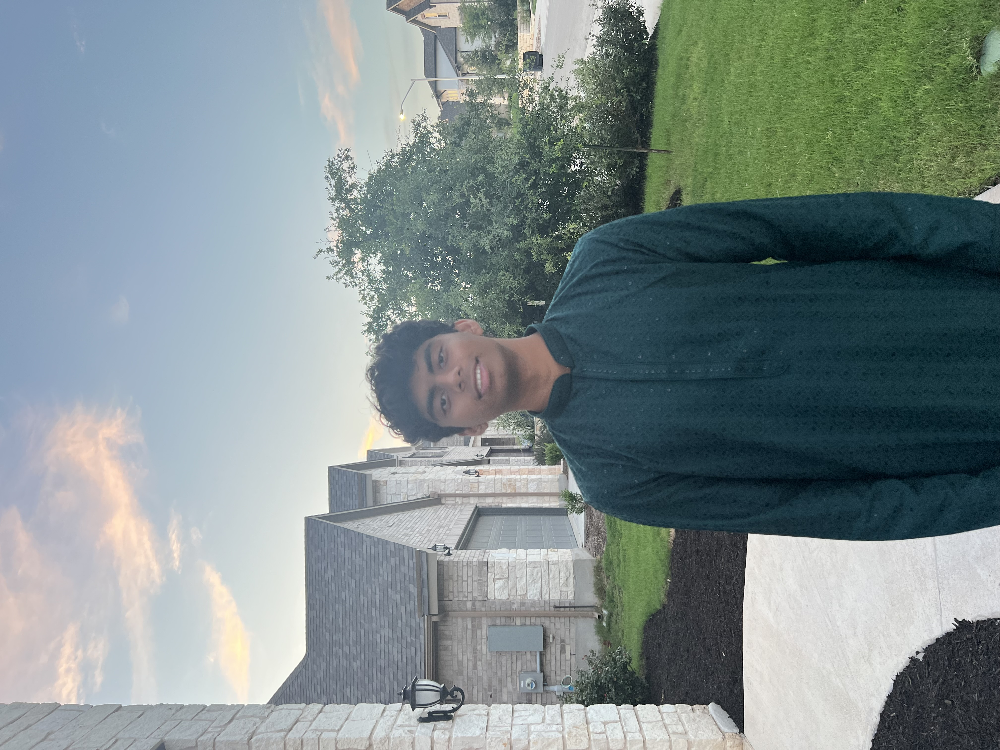

MEET
SAI ADITYA KODURI
Relevant Links:


Relevant Links:
Sai is currently a student attending The University of Texas at Austin
where he is studying data science & statistics, as well as minoring
in computer science. He is interested in areas of machine learning
such as computer vision with the intersection of high-performance
cloud computing, specifically facial recognition systems.
Undergraduate Researcher
Incoming undergraduate researcher for the quantum computing research stream
as a part of the Freshman Research Initiative.
Coding Instructor
Instructed topics of Python, Java, and C# to students with a focus on app and web
development using XCode and Swift applications to create personal websites and
games. Coordinated lectures with hands-on learning using Raspberry Pi to teach
processing, physical computing, input/output (GPIO), programming, and IoT with
data collection from sensors.
Youth District Coordinator
Directed and assisted in a plan to build 2 new elementary schools in our district
using more than $110 million from the school district budget to account for conflicts
related to expanding schools, rezoning students, and dealing with the immense
population growth in the North Austin area. Also ensured alignment with Strategic
Plan & 10-year plan by serving an advisory role.
Data Analyst Intern
Analyzed large datasets to develop numerous efficient models trained to over 95.6%
accuracy rates through data wrangling processes and using RapidMiner to provide
insights to clients to make business intelligence decisions. Mentored by professionals
in data science fields, gaining an objective world perspective of an IT solutions company
working with deep learning technologies such as AI chatbots and customer service.
Data Visualization Intern
Developed visuals and weekly reports for over 10+ sponsors that answer critical
questions about their social media marketing business and their influenced profits
made on advertisements. Researched a wide range of ways to improve upon the
marketing of a business using over 30 datasets by collecting, cleaning, filtering,
and visualizing the data through density marks, bullet graphs, and highlight tables.